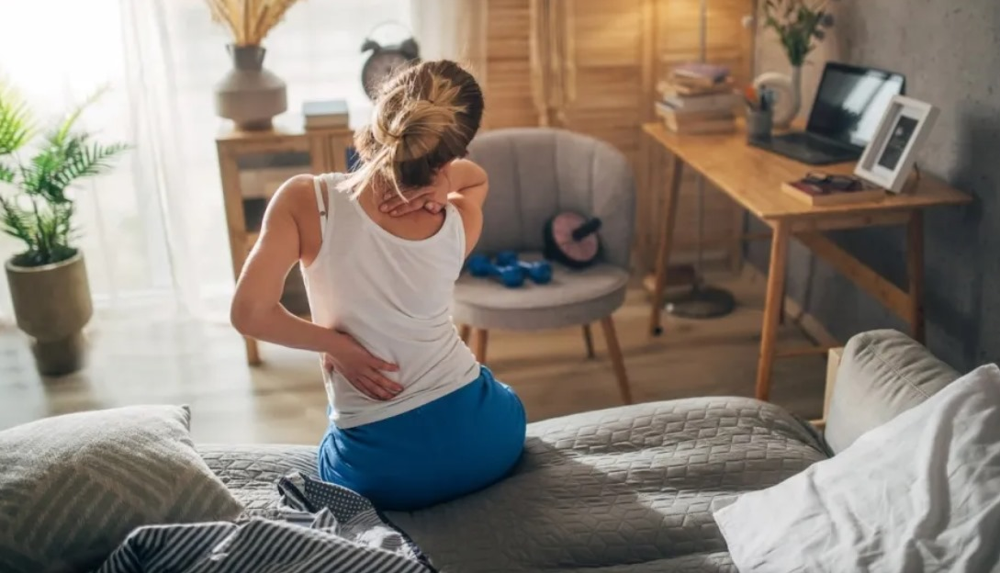
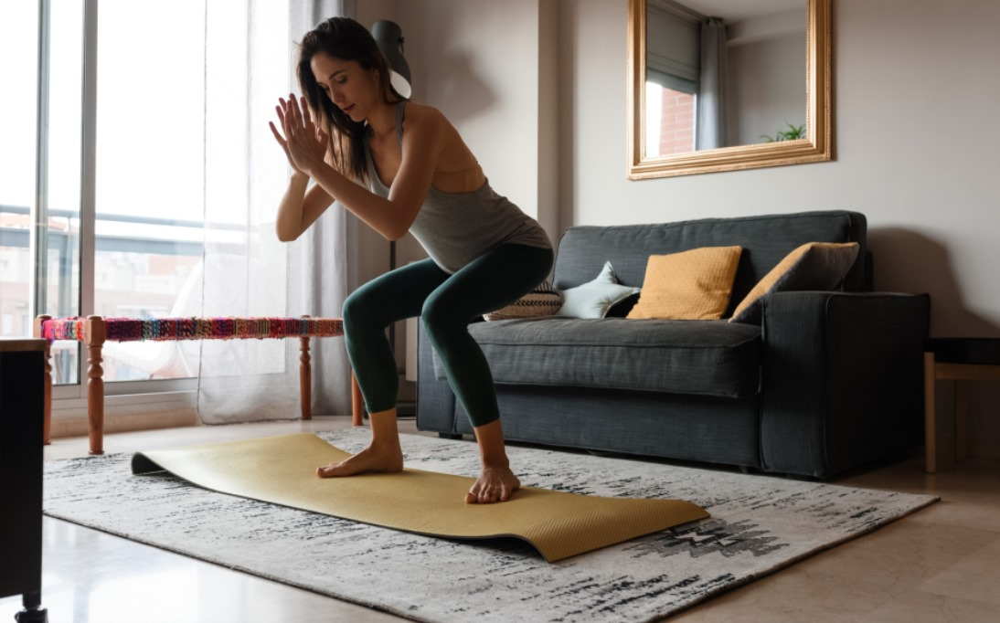

Interesting Reads
WHAT DOES IT MEAN TO “DRINK YOUR CALORIES”?
Read more
HABITS NEUROLOGISTS DO EVERY NIGHT FOR BETTER BRAIN HEALTH!
Read more
MINDFULNESS TECHNIQUES FOR PRECISION SPORTS
Read more

QUICK & SIMPLE GLUTEN-FREE RECIPES
Read more
MOST EFFECTIVE HABITS FOR EXERCISE TO A LONGER LIFE!
Read more
HEALTH CARE SHOULD IMPROVE YOUR HEALTH, RIGHT?
Read more

Pop, crunch, crack. No, those aren't the sounds of your favorite childhood cereal
settling into a bowl of milk. Those are the sounds your joints-
JUST WONDERING: IS IT NORMAL FOR MY BONES TO CRACK *A LOT* WHEN I MOVE?
Read more
25 HEALTHY OATMEAL RECIPES FOR YOUR DAY START
Read more
HOW DO TREES AND GREEN SPACES ENHANCE OUT HEALTH?
Read more

Exercise in the morning, or break a sweat during the day, maybe even go for a run
after work—but before bed?